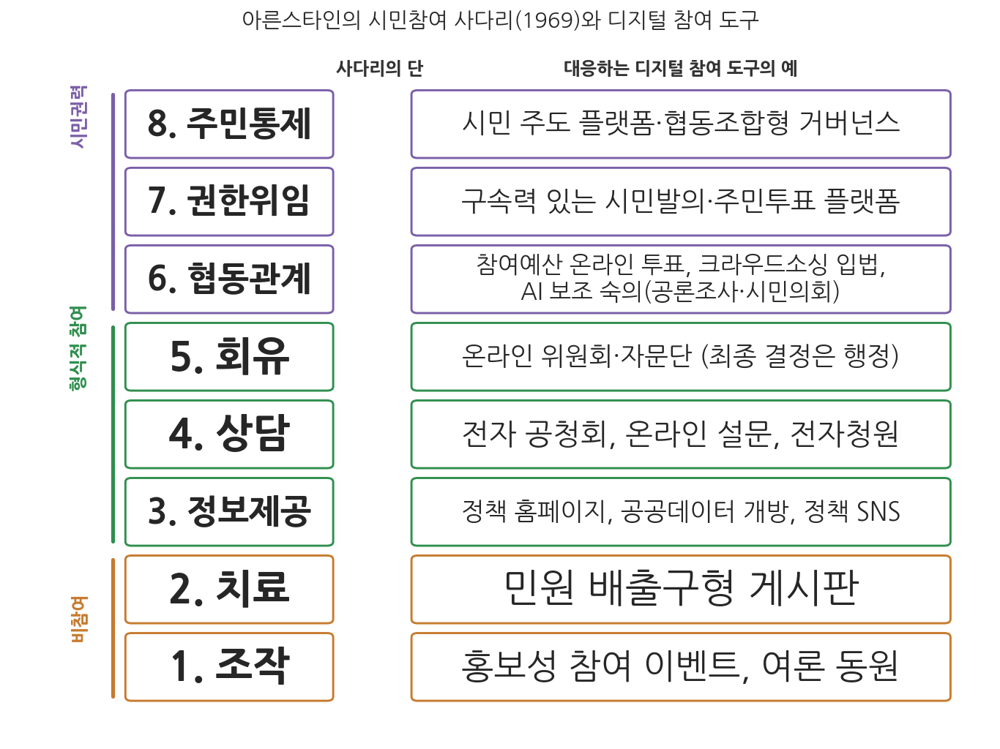
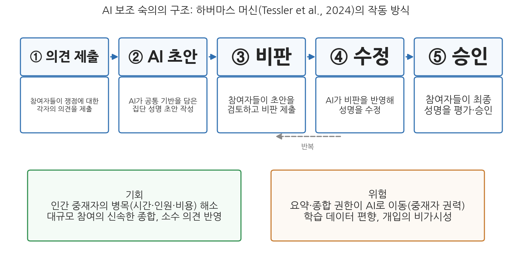

6주차 2차시. AI와 민주주의 (2): 시민참여와 숙의
권력의 재분배가 없는 참여는 힘없는 이들에게 공허하고 좌절스러운 과정이다. (셰리 아른스타인, 「시민참여의 사다리」, 1969)
이 장에서 배우는 것
2017년 여름, 한국 정부는 건설 중이던 신고리 원전 5·6호기의 운명을 이례적인 방식으로 결정하기로 했다. 정부가 직접 결정하는 대신, 무작위로 선발된 시민 471명으로 시민참여단을 꾸려 33일간 자료를 학습하고 합숙 토론을 거치게 한 뒤 그 결론을 따르기로 한 것이다. 원전에 대해 특별한 전문성이 없던 시민들은 찬반 양측의 발표를 듣고 질문하고 토론했으며, 최종 조사에서 59.5%가 건설 재개를 선택했다. 흥미로운 것은 결과만이 아니다. 토론을 거치며 참여자들의 의견 분포가 눈에 띄게 움직였고, 건설 중단을 권고받지 못한 쪽에서도 절차의 공정성을 인정하는 목소리가 많았다. 보통 사람들이 정보와 토론의 기회를 얻으면 어려운 공적 판단을 해낼 수 있다는 것, 이것이 숙의민주주의(deliberative democracy)의 오래된 주장이며, 신고리 공론화는 그 주장의 한국판 실험이었다.
앞 차시에서 우리는 AI가 민주주의의 조건들을 잠식하는 어두운 면을 보았다. 이번 차시는 방향을 돌려 밝은 면의 가능성을 따진다. 시민참여와 숙의는 대의제의 한계를 보완하려는 민주주의의 오랜 혁신 운동이었고, 디지털 기술은 그 비용을 극적으로 낮추어 왔으며, 이제 AI는 숙의의 규모와 질을 동시에 끌어올릴 수 있다는 기대를 받고 있다. 그러나 아른스타인의 경구가 경고하듯, 기술로 화려해진 참여가 권력의 재분배 없는 공허한 의식(ritual)에 그칠 위험도 그만큼 크다. 구체적으로 다음을 배운다.
- 참여민주주의 이론과 아른스타인의 사다리, 그리고 전자청원·참여예산 등 디지털 시민참여 제도의 실제
- 숙의민주주의의 이론(하버마스, 공론조사, 미니퍼블릭)과 AI 보조 숙의의 실험들
- 시민이 AI 권력을 감시하는 대항 권력의 사례들
- 민주적 AI 거버넌스의 조건 (11주차의 예고)
이 장은 하나의 질문을 따라 전개된다. "AI는 시민참여와 숙의를 실질적 권력 이동으로 만드는 도구가 될 수 있는가, 아니면 참여의 외양만 화려하게 만드는 도구에 그치는가?"
2.1 참여 이론(페이츠먼, 아른스타인)과 디지털 참여 제도(전자청원, 참여예산, 시민제안 플랫폼)의 진화를 본다 → 2.2 숙의 이론(하버마스, 피쉬킨)과 AI 보조 숙의의 실제 실험들을 읽는다 → 2.3 참여의 또 다른 얼굴, 시민이 알고리즘 권력을 감시하는 대항 권력을 본다 → 2.4 이 모든 논의를 "민주적 AI 거버넌스의 조건"으로 종합하며 11주차를 예고한다.
2.1 디지털 시민참여의 진화
참여민주주의: 투표를 넘어서
1960-70년대 시민권 운동과 학생 운동이 활발해지면서, 주기적 선거를 넘어 더 직접적인 시민참여를 요구하는 참여민주주의 개념이 대두했다. 이론적 초석을 놓은 캐럴 페이츠먼(Carole Pateman)은 『참여와 민주주의 이론』(1970)에서, 기존 민주주의 이론가들이 대중의 무관심과 무능력을 근거로 엘리트 지배를 정당화하는 것을 비판했다. 시민에게 권력을 주지 않으면 참여 의욕이 낮아지는데, 그로 인한 무관심을 다시 엘리트 지배의 근거로 삼는 것은 순환논법이라는 것이다. 페이츠먼은 루소와 밀 같은 고전 사상가들이 옹호한 진정한 인민 지배의 이념을 되살리며, 진정한 민주주의는 투표에 그치지 않고 사회의 모든 수준에서 "자신의 삶에 영향을 미치는 결정"에 참여하는 것이라고 주장했다. 그리고 참여는 그 자체가 학교다. 참여 경험이 시민의 효능감과 역량을 기른다는 것이다. 1980년대에는 벤저민 바버(Benjamin Barber)가 『강한 민주주의』(1984)에서 마을 집회식 토론을 통해 시민이 끊임없이 공적 삶을 형성하는 참여적 공화국의 비전을 제시했다.
그러나 모든 "참여"가 같은 참여는 아니다. 도시계획가 셰리 아른스타인(Sherry Arnstein)은 1969년의 고전적 논문에서 시민참여를 8개의 단(rung)으로 이루어진 사다리에 비유했다. 아래쪽의 조작(manipulation)과 치료(therapy)는 참여의 외양을 쓴 비참여다. 행정이 일방적으로 교육하고 설득하며 주민은 참석만 하는 수준이다. 중간의 정보제공, 상담, 회유(placation)는 형식적 참여(tokenism)다. 주민이 듣고 말할 수는 있지만 환류는 잘 일어나지 않고, 위원회로 참여 범위가 넓어져도 최종 판단은 행정기관이 한다. 위쪽의 협동관계(partnership), 권한위임(delegated power), 주민통제(citizen control)에 이르러야 시민권력(citizen power)이라 부를 수 있다. 협상력을 갖고, 특정 계획에 우월한 결정권을 행사하고, 입안에서 집행과 평가까지 주민이 통제하는 단계다. 이 사다리는 반세기가 지난 지금도 참여 제도를 평가하는 기본 잣대로 쓰인다. 어떤 참여 플랫폼을 보든 물어야 한다. 이것은 사다리의 몇 단인가.

그림 6-3을 읽는 법은 이렇다. 왼쪽이 아른스타인의 8단 사다리(아래가 비참여, 위가 시민권력)이고, 오른쪽은 각 수준에 대응하는 디지털 참여 도구의 예다. 이 그림에서 알 수 있는 것은 두 가지다. 첫째, 디지털 도구는 사다리의 모든 단에 존재한다. 기술의 존재 자체는 참여의 수준을 말해 주지 않는다. 둘째, 현존하는 디지털 참여 제도의 다수는 사다리의 중간(형식적 참여)에 몰려 있고, 위쪽으로 갈수록 사례가 드물어진다. 기술이 낮춘 것은 참여의 비용이지 권력 재분배의 저항이 아니기 때문이다.
전자정부에서 전자민주주의로: 제도의 지형
인터넷과 디지털 기술의 부상은 시민참여와 공공 숙의의 새로운 장을 열었다. 초기의 전자정부(e-government)는 행정 서비스의 온라인 제공과 정부 정보의 인터넷 공개에 초점을 두었으나, 점차 전자민주주의(e-democracy)와 전자참여(e-participation)로 영역을 넓혀 디지털 매체를 통한 시민의 정책 참여를 포괄하게 되었다. 참여민주주의와 숙의민주주의의 이념을 기술적으로 구현하려는 시도인 셈이다. 실제 제도의 지형을 유형별로 보자.
첫째, 전자청원이다. 일정 수 이상의 시민이 온라인으로 동의하면 정부나 의회가 공식 응답할 의무를 지는 제도로, 영국 의회의 전자청원(10만 명 동의 시 의회 토론 검토), 미국 백악관의 위 더 피플(We the People) 등이 선구적 사례다. 한국의 경험은 아래 사례 박스에서 따로 읽는다. 둘째, 참여예산이다. 예산의 일부에 대해 시민이 사업을 제안하고 투표로 우선순위를 정하는 제도로, 1989년 브라질 포르투알레그리에서 시작되어 세계로 퍼졌다. 한국은 2011년 지방재정법 개정으로 모든 지방자치단체에 주민참여예산제가 의무화되었고, 2018년부터는 중앙정부 차원의 국민참여예산제도 운영되고 있다. 참여예산은 상징적 장식이 아니라 실제로 돈의 흐름을 바꾼다. 참여예산을 운영하는 지자체는 자원을 보다 즉각적이고 가시적인 지출로 재분배하고 장기 개발 지출의 비중을 줄이는 경향이 있으며, 그 영향은 참여예산에 배정된 금액을 넘어 지방예산 전반에 미친다(Lee & Min, 2023). 셋째, 시민제안·크라우드소싱 플랫폼이다. 아이슬란드의 베터 레이캬비크(Better Reykjavik)는 시민재단과 시가 공동 운영하는 플랫폼으로, 시민들이 도시 발전 아이디어를 제안·토론·투표하고 예산 결정과 지역 프로젝트에 대한 제안권과 투표권을 행사한다. 스페인 바르셀로나가 2016년 시작한 데시딤(Decidim)은 시민참여 플랫폼을 아예 오픈소스 공공 인프라로 만들어 수백 개 도시와 기관이 가져다 쓰게 했다. 도시 계획 수립 과정에 수만 명의 시민 제안을 받아 반영하는 데 활용되었다. 넷째, 트위터(현 X)나 페이스북 같은 소셜미디어의 비공식 공론장 기능이다. 상당수 행정기관이 공식 계정으로 시민과 질의응답을 하고 정책을 설명하며, 비공식 숙의가 일상화되었다. 물론 앞 차시에서 본 대로 이 공간의 담론은 극단적 의견과 가짜뉴스가 섞여 숙의의 이상과 멀어질 때도 많지만, 정부와 시민 사이의 장벽이 낮아져 쌍방향 소통이 가능해졌다는 점은 분명한 변화다.
2017년 8월 문재인 정부가 개설한 청와대 국민청원은 "20만 명 동의 시 정부·청와대 책임자가 답변"을 내걸어 폭발적 호응을 얻었고, 5년간 100만 건이 넘는 청원이 올라오며 한국 디지털 참여의 상징이 되었다. 그러나 법적 근거 결여로 인한 폐쇄적 운영, 권력 남용의 통로로의 악용 가능성, 일부 세력의 중복 동의를 통한 여론 왜곡, 부실한 답변 등이 문제로 지적되었다(윤형석, 2021). 2022년 정부 교체와 함께 국민청원은 폐지되었고, 윤석열 정부 대통령실은 국민제안 플랫폼을 운영했으나 이전만큼 활성화되지 못했으며 이 역시 2025년 정부 교체 국면에서 운영이 종료되었다. 2026년 현재 공식 창구는 청원법 전부개정에 따라 2023년부터 행정안전부가 운영하는 통합청원 플랫폼 청원24, 국민권익위원회의 국민신문고·국민생각함, 그리고 30일 내 5만 명 동의 시 소관 위원회에 회부되는 국회 국민동의청원으로 분산되어 있다. 국민신문고에는 새 정부 출범 후 7개월간(2025년 6월-12월) 662만여 건의 민원이 접수될 만큼 이용량 자체는 많지만, 청원24 등 숙의형 창구의 이용률은 저조한 편이다.
이 사례가 보여 주는 것은 무엇인가. 첫째, 참여 플랫폼의 성패는 기술이 아니라 응답의 무게가 좌우한다. 국민청원의 폭발적 인기는 "대통령이 답한다"는 권력과의 직결성에서 나왔고, 법적 기반이 탄탄한 후속 제도들이 오히려 외면받는 역설은 참여자들이 절차가 아니라 영향력을 원한다는 것을 보여 준다. 둘째, 정부가 바뀔 때마다 플랫폼이 만들어지고 폐기되는 불연속은 참여의 제도적 학습을 가로막는다. 참여 제도가 특정 정권의 홍보 수단이 아니라 지속되는 인프라가 되려면 법적 기반과 초당적 소유가 필요하다.
참여의 명암: 격차, 리터러시, 그리고 두 가설
쌍방향 소통의 가능성은 참여·숙의 민주주의의 필요조건이지만, 그것이 참여의 양과 질을 담보하지는 않는다. 첫 번째 그늘은 디지털 격차다. 인터넷 접근성이나 디지털 문해력이 떨어지는 계층은 온라인 참여에서 소외되며, 이는 전자참여의 대표성에 심각한 문제를 일으킨다. 한국은 인터넷 접근성 자체는 세계 최고 수준이지만 디지털 리터러시의 세대 간 격차가 크기 때문에, 참여 플랫폼을 모바일 접근성 향상이나 고령층 교육 같은 포용적 설계로 보완할 필요가 있다.
여기서 디지털 리터러시(digital literacy)는 단순히 기기를 다루는 능력이 아니다. 디지털 환경에서 정보를 비판적으로 탐색·평가·생성·소통·보호할 수 있는 역량 전반을 가리키며, 기술적 역량과 인지적 역량, 그리고 디지털 공간에서 윤리적으로 소통·협업하는 사회정서적 역량을 포괄한다(Ng, 2012). 미하일리디스(Mihailidis, 2014)는 디지털 리터러시가 시민참여를 촉진하는 경로를 세 차원으로 구분했다. 정보 과잉의 시대에 신뢰할 수 있는 정보를 선별하는 비판적 정보 소비 능력, 플랫폼을 생산적 참여 수단으로 활용하는 참여적 커뮤니케이션 능력, 그리고 시민이 정보의 소비자를 넘어 생산자로서 목소리를 내는 미디어 제작·표현 능력이다. 이 역량들이 시민을 수동적 존재에서 능동적인 공적 주체로 전환시킨다는 것이다. 앞 차시에서 본 허위정보 문제의 근본적 처방이 결국 시민의 리터러시로 돌아오는 이유이기도 하다. 문제는 이 격차를 해소할 수단이 교육 외에는 뚜렷하지 않다는 점이다.
두 번째 그늘은 효과의 불확실성이다. 디지털 참여의 효과를 놓고는 전통적으로 두 가설이 대립해 왔다(김경동 외, 2025). 정규화 가설은 디지털 참여가 기존 오프라인 참여를 대체할 뿐이며 현재의 이해관계 지형을 그대로 반영하는 데 그친다고 본다. 원래 참여하던 사람들이 채널만 옮긴다는 것이다. 동원 가설은 디지털 참여가 기존에 대표되지 않던 새로운 이해관계를 정치 체계 안으로 끌어들일 수 있다고 본다. 다만 그 결과는 열려 있어서, 소외계층에게 혜택이 될 수도 있지만 디지털 역량을 갖춘 집단이 목소리를 독점하면서 더 큰 소외로 귀결될 수도 있다. 어느 쪽이 맞는지는 제도 설계에 달린 경험적 질문이며, 바로 그래서 참여 플랫폼의 설계는 기술 문제가 아니라 정치 문제다.
2.2 AI 시대의 숙의민주주의
참여의 양에서 참여의 질로
1990년대 이후 숙의민주주의가 큰 주목을 받으면서, 관심의 무게중심이 참여의 양에서 참여의 질로 이동했다. 숙의민주주의는 집합적 결정의 정당성이 시민들 간의, 또는 그 대표들 간의 숙고된 토론에 달려 있다고 본다. 동등한 지위와 상호 존중을 바탕으로 의제를 논의하고 자신들의 삶에 영향을 미칠 정책을 결정하는 민주주의다(Bächtiger et al., 2018). 민주주의를 주어진 선호의 단순한 합계로 보는 관점과 달리, 숙의를 통해 선호 자체가 형성되고 공공선이 모색되는 과정을 강조한다.
철학적 기반은 하버마스의 의사소통 행위 이론과 공론장 개념이 제공했다. 하버마스의 모델에서 시민들의 공론장 담론은 의사소통적 권력(communicative power)을 생성하고, 이것이 제도권의 행정 권력과 결합할 때 정치체제의 행위가 정당성을 얻는다. 비공식적 시민 숙의(여론 형성)가 공식 의사결정(입법, 정책 집행)에 영향을 미칠 때 비로소 법과 정책이 민주적으로 정당화된다는 뜻이다. 이때 법은 공론장에서 나온 의사소통 권력을 정책으로 전환하는 "변압기(transformer)" 역할을 한다. 중요한 것은 숙의민주주의가 대의제를 대체하려는 기획이 아니라는 점이다. 시민 담론이 대표 기관의 판단에 스며들어야 한다는 주장이며, 민주적 정당성을 투표나 엘리트 흥정만이 아니라 대화와 담론의 질에서 찾는 것이다. 거트만과 톰슨은 도덕적 갈등 상황에서도 시민들이 상호 납득 가능한 이유를 제시할 의무가 있으며, 논의 과정에서 호혜성, 공개성, 책임성, 상호 존중을 준수해야 한다고 정리했다(Gutmann & Thompson, 1996). 숙의의 목표는 만장일치가 아니라, 반대 입장이라도 각자가 납득할 수 있는 정당한 결정을 함께 도출하는 것이다. 이런 접근은 생명윤리나 종교·도덕 갈등처럼 다원화된 사회에서 합의가 어려운 문제에 특히 유용하다.
미니퍼블릭(mini-publics)은 무작위 추출로 사회의 축소판에 가까운 소규모 시민 집단을 구성하고, 충분한 정보와 전문가·중재자와의 상호작용을 제공해 숙의하게 하는 제도의 총칭이다. 배심원 제도, 시민의회, 합의회의 등이 여기에 속한다. 공론조사(deliberative polling)는 제임스 피쉬킨(James Fishkin)이 고안한 대표적 기법으로, 무작위로 뽑힌 시민들을 한자리에 모아 며칠간 전문가에게 정보를 듣고 토론하게 한 후 토론 전후의 의견 변화를 측정한다. 시민의회는 아일랜드(헌법 개정 논의)나 캐나다(선거제도 개혁) 등에서 활용되었으며, 대표성 있는 시민 집단이 심의해 권고안을 정부나 의회에 제출한다. 이런 시도들이 확산되는 흐름을 숙의적 전환(deliberative turn)이라 부른다. 서두의 신고리 5·6호기 공론화도 공론조사 방식을 원용한 한국의 미니퍼블릭 실험이었다.
숙의의 두 고질병: 규모와 비용
이상은 높지만 현실의 숙의에는 고질적 한계가 있다. 로버트 달이 제시한 이상적 조건들(앞 차시 1.1절)에 비추어 보면, 현실의 참여·숙의 실천은 교육 수준, 사회경제적 지위, 정보 접근성의 차이로 인한 불공정성 문제와, 심층 토론과 합의 형성에 많은 시간과 자원이 드는 비효율성 문제를 안고 있다. 미니퍼블릭은 무작위 추출로 대표성을 확보하려는 시도지만, 지식과 정보의 격차 때문에 숙의 과정에서 전문가의 의견이 지나친 영향력을 행사할 수 있다. 그리고 무엇보다 규모의 문제가 있다. 수백만에서 수천만 인구를 가진 현대 국가에서 모든 시민이 동일하게 숙의에 참여하는 것은 불가능하다. 이를 보완하기 위해 사회 전반에 다양한 규모와 수준의 숙의 장을 만들고 이들을 연결해 전체로서 숙의 기능을 수행하게 하자는 숙의 체계(deliberative system) 개념이 제안되었지만, 수십 명의 깊은 토론과 수백만 명의 얕은 참여 사이의 간극은 오랫동안 좁혀지지 않았다.
바로 이 지점에서 AI가 등장한다. 숙의의 규모 문제와 비용 문제를 기술로 풀 수 있다면 어떨까. 최근 몇 년 사이 이 질문은 사변이 아니라 실험의 대상이 되었다.

그림 6-4를 읽는 법은 이렇다. 가운데 흐름이 AI 중재자를 활용한 숙의의 절차(의견 제출 → AI의 통합 성명 초안 → 참여자 비판 → 수정 → 승인)이고, 좌우의 상자는 이 방식의 기회 요인과 위험 요인이다. 이 그림에서 알 수 있는 것은 AI가 인간 중재자의 병목(시간, 인원, 비용)을 풀어 숙의의 규모를 키울 수 있지만, 동시에 요약과 종합의 권한이 AI에게 넘어가는 만큼 새로운 통제 문제가 생긴다는 점이다. 실제 실험들을 보자.
구글 딥마인드 연구진은 하버마스의 이름을 딴 AI 시스템 "하버마스 머신(Habermas Machine)"을 만들어, 영국인 5,700여 명이 참여한 실험 결과를 2024년 10월 국제학술지 사이언스(Science)에 발표했다(Tessler et al., 2024). 브렉시트, 이민, 최저임금 같은 쟁점에 대해 소집단 구성원들이 각자 의견을 제출하면, AI가 공통 기반을 담은 집단 성명 초안을 작성하고, 참여자들의 비판을 반영해 수정하는 방식이다. 참여자들은 AI가 작성한 성명이 인간 중재자가 작성한 것보다 더 명료하고 공정하다고 평가했으며, AI 중재를 거친 집단은 직접 논쟁만 한 집단보다 견해 차이가 줄어들었다. 인간 중재자가 몇 분 걸리는 작업을 AI는 몇 초 만에 해냈고, 다수 의견을 반영하되 소수 의견을 지우지 않고 수정 과정에서 오히려 비중 있게 다루는 경향도 확인되었다. 연구진은 이 방식이 숙의의 규모 확장 가능성을 보여 준다고 평가하면서도, 참여자의 사실 오류를 교정하거나 토론의 의제 자체를 설정하는 역할까지 AI에 맡길 수 있는지는 별개의 문제로 남겨 두었다.
대만의 브이타이완(vTaiwan)은 시빅해커 커뮤니티(g0v)와 정부가 함께 운영해 온 온라인 공론 절차로, 폴리스(Pol.is)라는 도구를 사용한다. 폴리스는 참여자들이 짧은 의견을 올리고 서로의 의견에 찬반을 표시하면, 기계학습으로 의견 지형의 군집을 시각화하고 진영을 가로질러 폭넓은 동의를 받는 진술을 부상시킨다. 댓글 전쟁 대신 "우리가 이미 동의하는 지점"을 찾도록 설계된 것이다. 대표 사례가 2015-2016년의 우버(UberX) 논쟁이다. 택시업계와 우버 지지자로 갈라진 수천 명의 참여자들이 폴리스 위에서 의견을 주고받은 결과, 승객 안전과 보험 의무화 등 양 진영이 모두 동의하는 원칙들이 도출되었고 정부는 이를 바탕으로 차량 공유 규제를 마련했다. 이 모델을 이끈 오드리 탕(Audrey Tang)은 이후 대만의 초대 디지털장관이 되었으며, 폴리스 방식은 여러 나라의 공론 절차와 AI 기업들의 의견 수렴 실험에 차용되었다.
여기에 더해, 미국 스탠퍼드대학 숙의민주주의연구소는 공론조사를 온라인으로 옮긴 자동 중재 플랫폼을 운영한다. AI 중재자가 발언 순서를 관리하고, 발언하지 않은 참여자를 초대하며, 무례한 발언에 개입하고, 정해진 의제에 따라 토론을 진행한다. 이 플랫폼은 2023년 10월 메타(Meta)와 함께 브라질, 독일, 스페인, 미국 4개국 시민 1,545명이 참여한 "생성형 AI에 관한 커뮤니티 포럼"에 사용되었다. AI 챗봇의 개발 방향이라는 기업의 의사결정에 무작위 추출된 일반 시민의 숙의 결과를 반영하려는 시도로, 이후 AI 에이전트의 미래를 주제로 한 업계 공동 숙의 포럼으로 이어지고 있다. 기업이 주관하는 숙의가 정당화 도구에 그칠 수 있다는 비판도 있지만, 숙의 기법이 정부를 넘어 AI 거버넌스 자체에 적용되기 시작했다는 점은 눈여겨볼 대목이다.
AI 보조 숙의의 쟁점
이 실험들이 유망하다고 해서 문제가 사라진 것은 아니다. 첫째, 진정성의 문제다. 참여의 깊이와 진정성에 대한 오랜 질문, 곧 그것이 얼마나 실질적 영향력을 갖는 참여인가라는 질문은 AI 시대에도 그대로 남는다. 협의 자체보다 이후의 실천이 중요하듯, 참여 자체보다 영향력 있는 진정한 참여(authentic participation)가 중요하다(Roberts, 2004). AI로 수만 명의 의견을 요약할 수 있게 되었어도, 그 요약이 정책을 바꾸지 못한다면 사다리의 아래 단에 머무는 것이다. 이상적으로는 의제 설정부터 결정, 실행까지 전 과정에 시민이 함께해야 하지만(King et al., 1998), 이를 위해서는 기관의 사고방식 전환과 권한 재분배가 필요하고 현실에서는 부분적으로만 이루어지고 있다. 특히 AI가 도입되면 블랙박스적 성격 때문에 정책 전 과정에 대한 시민 참여가 어려워지고, 책임성을 둘러싼 복잡한 법적 문제 때문에 권한 재분배도 한층 어려워진다.
둘째, 중재자 권력의 문제다. 요약하고 종합하는 자는 무엇을 남기고 무엇을 버릴지 결정한다. AI 중재자가 어떤 데이터로 학습되었고 어떤 경향을 갖는지에 따라 숙의의 결론이 미묘하게 기울 수 있으며, 참여자들은 그 개입을 알아차리기 어렵다. 5주차에서 본 편향 문제가 숙의의 한복판에 들어오는 것이다. 셋째, 숙의 환경 자체의 오염이다. 정치 양극화와 허위정보의 확산은 숙의민주주의에 대한 직접적 도전이다. 상대의 논거를 들으려 하지 않고 이기는 것만 목표로 삼는 대립적 정치 환경에서는 숙의가 설 자리가 좁고, 탈진실 정치는 숙의의 전제인 공유된 사실 기반을 무너뜨린다(Bächtiger et al., 2018). AI가 숙의를 돕는 속도보다 AI발 허위정보가 숙의의 토양을 망치는 속도가 빠르다면, 기술의 순효과는 마이너스일 수 있다.
참여·숙의의 확대에 회의적인 쪽은 시민 참여가 전문성 부족과 절차 지연을 낳고, 결국 "다수의 폭정"이나 포퓰리즘 정책으로 흐를 위험을 지적한다. 옹호하는 쪽은 시민 참여와 대의제가 제로섬이 아니라 보완 관계라고 반박한다. 대의제의 한계를 시민 참여로 채우고, 참여의 결과물을 대표 기관이 책임 있게 받아 정책화하면 시너지가 난다는 것이다. 이 대립을 조정하려는 개념이 혼합 민주주의(mixed democracy), 하이브리드 거버넌스다. 효과 평가를 둘러싼 논쟁도 같은 구도다. 옹호자들은 참여가 정치 효능감, 시민의식, 정부 신뢰, 사회적 학습을 높인다고 보고, 회의론자들은 시간과 행정 자원을 들이고도 정책이 달라지지 않는다면 비효율이라고 본다. 참여 과정 자체를 민주적 가치의 실현으로 보아 결과와 무관하게 긍정하는 견해도 있다. AI는 이 논쟁의 비용 항목(시간, 규모)을 바꿀 수는 있지만, 권한을 누구와 나눌 것인가라는 핵심 항목은 바꾸지 못한다.
2.3 시민 감시와 대항 권력
감시의 방향을 뒤집다
지금까지의 참여는 정부가 마련한 채널 안에서의 참여였다. 그러나 민주주의에서 시민의 역할은 초대받은 자리에 앉는 것으로 끝나지 않는다. 권력을 감시하고, 잘못에 이의를 제기하고, 필요하면 싸우는 것, 곧 대항 권력(countervailing power)의 역할이다. AI 시대에 이 역할은 새로운 과제를 안게 되었다. 감시해야 할 권력이 알고리즘의 형태를 하고 있기 때문이다. 앞 차시에서 본 플랫폼 권력도, 3-5주차에서 본 정부의 자동화된 의사결정도, 전문 지식 없이는 들여다보기조차 어렵다.
그럼에도 시민사회는 감시의 방법을 학습해 왔다. 첫째, 조사 보도와 시민 연구다. 미국의 탐사보도 매체 프로퍼블리카(ProPublica)가 재범 위험 평가 알고리즘의 인종 편향을 폭로한 사건(5주차)이나, 독일의 시민단체 알고리즘워치(AlgorithmWatch)가 각국 자동화 의사결정 시스템을 추적해 공개하는 활동이 대표적이다. 둘째, 정보공개 제도의 활용이다. 정부 알고리즘에 대한 정보공개 청구와 설명요구는 3주차에서 본 투명성 제도들을 시민이 무기로 쓰는 방식이다. 셋째, 소송이다. 그리고 소송은 지금까지 가장 강력한 성과를 낸 통로였다.
네덜란드 정부는 복지 부정수급을 적발한다는 명목으로 여러 정부 기관의 개인 데이터를 결합해 "위험 시민"을 점찍는 시스템 SyRI(System Risk Indication)를 운영했다. 위험 점수 산정 방식은 공개되지 않았고, 시스템은 주로 저소득층 이민자 밀집 지역에 투입되었다. 네덜란드 법률가위원회(NJCM)를 비롯한 시민단체 연합과 개인들이 국가를 상대로 소송을 제기했고, 2020년 2월 5일 헤이그 지방법원은 SyRI가 유럽인권협약 제8조(사생활 존중)를 위반한다고 판결했다. 법원은 부정수급 적발이라는 목적의 정당성은 인정하면서도, 시스템의 불투명성과 사생활 침해의 불균형을 문제 삼았다. 정부는 항소를 포기하고 시스템을 중단했다. 이 판결은 시민사회가 사법 절차를 통해 국가의 알고리즘 권력을 실제로 멈춰 세운 세계적 선례가 되었으며, 유엔 빈곤·인권 특별보고관이 재판부에 의견서를 제출하는 등 국제적 주목을 받았다.
이 사례가 보여 주는 것은 대항 권력의 성립 조건이다. 시민단체의 문제 제기(결사), 언론의 조명(공론장), 독립된 법원(권력 분립)이 함께 작동했기에 결과가 나왔다. 어느 하나가 무너진 사회라면 같은 시스템이 지금도 돌아가고 있을 것이다. AI 권력에 대한 견제는 결국 민주주의의 기본기가 얼마나 튼튼한가에 달려 있다.
감시를 제도로: 등록부, 감사, 이의제기
시민의 감시가 사후 폭로와 소송에만 의존한다면 비용이 너무 크다. 그래서 감시 가능성 자체를 제도화하려는 시도들이 이어져 왔다. 첫째, 알고리즘 등록부(algorithm register)다. 2020년 핀란드 헬싱키와 네덜란드 암스테르담은 시 정부가 사용하는 AI·알고리즘 시스템의 목록과 용도, 데이터, 담당 부서를 공개하는 등록부를 세계 최초로 도입했다. 시민이 "우리 시가 어디에 어떤 알고리즘을 쓰는지"를 일단 알 수 있어야 감시도 참여도 가능하다는 발상이다. 둘째, 독립적 감사와 영향평가다. 도입 전에 위험을 평가하고(10주차에서 다룰 AI 영향평가), 운영 중에 외부가 점검하는 장치다. 셋째, 이의제기와 구제 절차다. 알고리즘 결정에 영향을 받은 개인이 설명을 요구하고 인간의 재검토를 받을 권리는 4주차에서 본 책임성 제도의 핵심이자, 시민 개개인에게 주어진 가장 기초적인 대항 수단이다.
이 제도들은 각각 3주차(투명성), 4주차(책임성), 10주차(영향평가)에서 다룬 장치들이다. 민주성의 렌즈로 다시 보면 공통의 성격이 드러난다. 모두 시민이 알고리즘 권력을 상대로 정보와 발언권을 확보하게 하는 장치, 곧 권력 비대칭을 줄이는 장치라는 점이다. 투명성과 책임성은 그 자체가 목적이라기보다 민주적 통제의 수단인 것이다.
2.4 민주적 AI 거버넌스의 조건
조건들을 종합하면
이번 주의 논의를 종합해 보자. AI와 민주주의의 관계는 위협(1차시)과 기회(2차시)의 단순한 대차대조표가 아니다. 양쪽을 관통하는 질문은 하나다. AI를 둘러싼 결정, 곧 어떤 AI를 만들고, 어디에 쓰고, 어떻게 통제할 것인가라는 결정 자체가 민주적으로 이루어지고 있는가. 이 질문에 답하는 체계를 AI 거버넌스라 부른다면, 지금까지의 논의에서 민주적 AI 거버넌스가 갖추어야 할 조건을 추릴 수 있다.
첫째, 진정한 참여다. 시민 의견 수렴이 결정에 실제로 반영되는 회로가 있어야 한다(Roberts의 진정한 참여, 아른스타인의 사다리 위쪽). 형식적 공청회나 홍보성 플랫폼은 오히려 불신을 키운다. 둘째, 숙의의 질이다. 참여가 순간의 여론 동원이 아니라 정보에 기반한 숙고가 되도록 미니퍼블릭, 공론조사, AI 보조 숙의 같은 장치를 설계에 포함해야 한다. 셋째, 감시 가능성이다. 등록부, 영향평가, 감사, 이의제기 절차를 통해 시민과 시민사회가 알고리즘 권력을 들여다보고 다툴 수 있어야 한다. 넷째, 권력 분산이다. 데이터와 연산 자원, 플랫폼의 집중을 견제하는 경쟁 정책과 규제, 그리고 공공 부문의 기술적 자율성 확보가 필요하다. 다섯째, 포용성이다. 디지털 격차와 리터러시 격차가 참여의 격차로 이어지지 않도록 하는 교육과 포용적 설계가 뒷받침되어야 한다.
한국의 맥락에서 이 조건들은 이제 막 제도화의 시험대에 올랐다. 2026년 1월 22일 시행된 AI기본법은 AI 정책의 거버넌스 체계와 사업자 의무를 규정한 세계에서 두 번째의 포괄적 AI 법률이지만, 그 거버넌스가 전문가와 산업계 중심으로 짜일지 시민 참여의 회로를 갖출지는 시행 초기인 지금도 열려 있는 질문이다. 참여와 숙의의 이론들은 학문에 머무르지 않고 행정의 실제 관행을 바꾸어 왔다. 행정기관은 예전보다 개방되고 투명해졌으며 시민을 의사결정의 공동생산자로 인식하기 시작했고, 전반적 흐름은 "더 많은 시민의 더 깊은 관여"를 향하고 있다. 디지털 기술과 AI는 이 변화를 가속하는 동시에 참여 피로, 과잉 참여의 비효율, 전문성과 시민 의견의 충돌이라는 새 숙제를 낳고 있다. 신공공서비스론이 말했듯 공무원의 역할이 시민들이 공유된 이익을 표현하고 달성하도록 돕는 조력자라면(Denhardt & Denhardt, 2000), AI 시대의 행정가에게는 하나의 역할이 추가된다. 알고리즘이 시민과 정부 사이에 들어선 시대에, 그 알고리즘이 봉사와 협력의 도구가 되도록 설계하고 감시하는 역할이다.
기업이 친환경 이미지만 연출하는 것을 그린워싱이라 부르듯, 결정은 이미 내려 놓고 참여의 외양만 빌리는 것을 참여 워싱(participation washing)이라 부를 수 있다. AI 시대의 참여 워싱은 한층 정교해질 수 있다. AI로 수만 건의 시민 의견을 수집·요약했다는 사실 자체가 "시민의 뜻을 반영했다"는 정당화의 수사로 쓰일 수 있기 때문이다. 판별 기준은 아른스타인 이래 변하지 않았다. 참여의 결과가 결정을 실제로 바꿀 수 있었는가, 권한은 재분배되었는가를 물어야 한다. 수집된 의견의 양이 아니라 기각된 대안의 기록, 곧 시민 의견 때문에 무엇이 달라졌는지의 증거를 요구하라.
11주차를 향한 예고
이 장에서 추린 민주적 거버넌스의 조건들은 원칙의 수준이다. 이를 실행하려면 구체적 장치가 필요하다. 어떤 AI가 위험한지 도입 전에 가려내는 장치(10주차, AI 영향평가), 국제기구와 국가와 조직 각 층위에서 원칙을 실행으로 옮기는 체계(11주차, AI 거버넌스), 그리고 법으로 강제하는 규제(12주차, EU AI Act와 한국 AI기본법)다. 특히 11주차에서는 이번 주에 본 이해관계자 참여의 문제, 곧 AI 거버넌스의 테이블에 누가 앉는가라는 질문을 국제기구, 주요국, 한국의 실제 거버넌스 체계 속에서 다시 만나게 될 것이다. 민주주의의 렌즈를 통과한 눈에는 그 체계들이 단순한 행정 조직도가 아니라, 이번 주의 질문, 곧 "AI에 대한 결정은 누구의 동의에 근거하는가"에 대한 각국의 대답으로 보일 것이다.
요약
참여민주주의는 시민이 투표를 넘어 자신의 삶에 영향을 미치는 결정에 직접 참여해야 하며 참여 경험 자체가 시민의 역량을 기른다고 주장했고(Pateman, 1970), 아른스타인의 사다리는 참여를 비참여, 형식적 참여, 시민권력의 8단으로 구분해 참여의 질을 평가하는 잣대를 제공했다. 디지털 기술은 전자청원, 참여예산, 시민제안 플랫폼 등으로 참여의 비용을 낮추었지만, 한국 온라인 청원 제도의 부침이 보여 주듯 참여 플랫폼의 성패는 기술이 아니라 응답의 무게와 제도적 지속성이 좌우하며, 디지털 격차와 리터러시 격차, 그리고 정규화 가설과 동원 가설의 대립이 시사하는 효과의 불확실성이 그늘로 남아 있다. 숙의민주주의는 정당성의 근거를 숙고된 토론의 질에서 찾으며 공론조사와 미니퍼블릭 같은 제도로 구현되어 왔는데, 고질적 한계였던 규모와 비용의 문제에 대해 AI가 새로운 해법으로 실험되고 있다. 하버마스 머신은 AI 중재가 집단의 공통 기반 도출을 도울 수 있음을 보여 주었고, 대만의 폴리스 기반 공론 절차와 스탠퍼드의 온라인 숙의 플랫폼은 실제 정책과 기업 의사결정에 적용되었다. 그러나 요약·종합 권한을 가진 AI 중재자의 편향, 참여의 진정성, 허위정보로 오염된 숙의 환경이라는 쟁점이 남는다. 시민의 역할은 초대받은 참여를 넘어 대항 권력에 이르며, 네덜란드 SyRI 판결은 시민사회가 소송으로 국가 알고리즘을 멈춘 선례를, 알고리즘 등록부와 영향평가·이의제기 제도는 감시의 제도화를 보여 준다. 이를 종합한 민주적 AI 거버넌스의 조건은 진정한 참여, 숙의의 질, 감시 가능성, 권력 분산, 포용성이며, 이 원칙들이 실제 제도로 어떻게 구현되는지는 10-12주차에서 다룬다.
토론·복습 문제
6-5. (서술형 연습) 아른스타인의 시민참여 사다리의 세 범주(비참여, 형식적 참여, 시민권력)를 설명하고, 이 장에서 다룬 디지털 참여 제도(전자청원, 참여예산, 시민제안 플랫폼, AI 보조 숙의 중 두 가지 이상)를 사다리 위에 위치시켜 그 근거를 논하시오.
6-6. (찬반 토론) "AI 중재자는 인간 중재자보다 공정한 숙의를 가능하게 한다"는 명제를 놓고 토론해 보시오. 찬성 측은 하버마스 머신 실험의 결과(명료성·공정성 평가, 소수 의견 반영)를, 반대 측은 중재자 권력과 편향의 문제(무엇을 요약에서 남기고 버릴지를 AI가 정한다는 점)를 논거로 활용하시오.
6-7. 청와대 국민청원은 법적 근거 없이도 폭발적으로 이용되었고, 법적 기반을 갖춘 청원24는 이용이 저조하다. 이 역설이 참여 제도 설계에 주는 교훈은 무엇인가. "응답의 무게"와 "제도적 지속성"을 모두 확보하는 설계안을 구상해 보시오.
6-8. (서술형 연습) 신고리 5·6호기 공론화(2017)를 이 장의 개념들로 분석하시오. 이 사례는 어떤 점에서 미니퍼블릭·공론조사의 원칙을 구현했는가. 만약 같은 공론화를 2026년에 AI 보조 숙의 도구와 함께 설계한다면 무엇이 달라질 수 있으며, 어떤 새로운 위험을 관리해야 하는가.